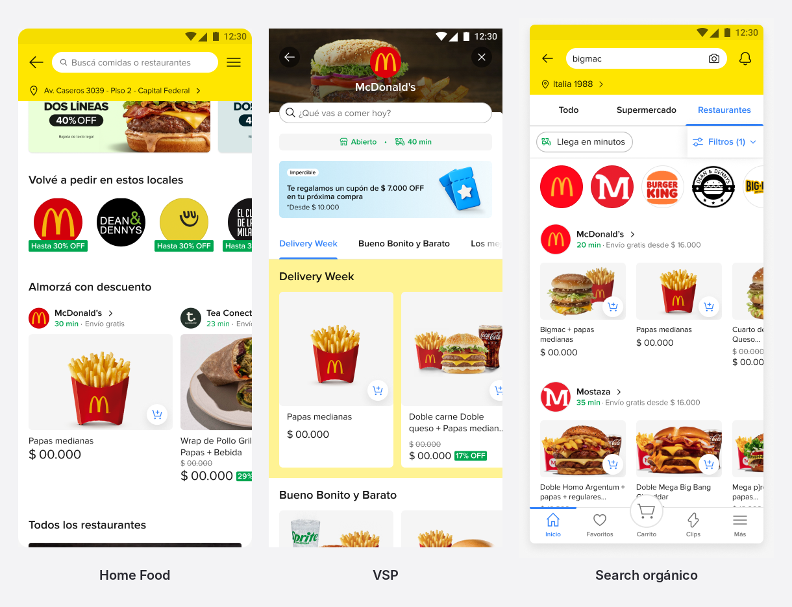
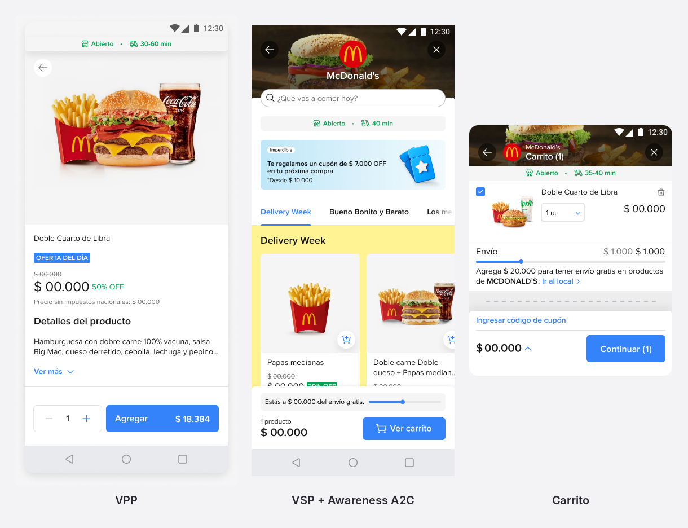
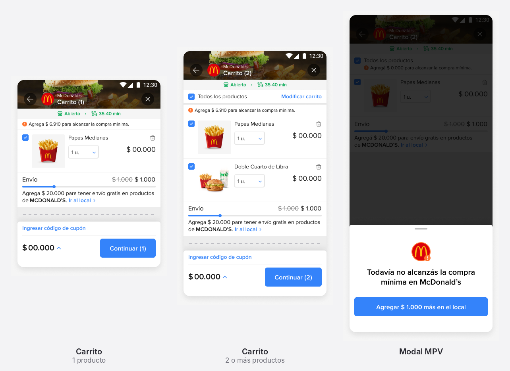
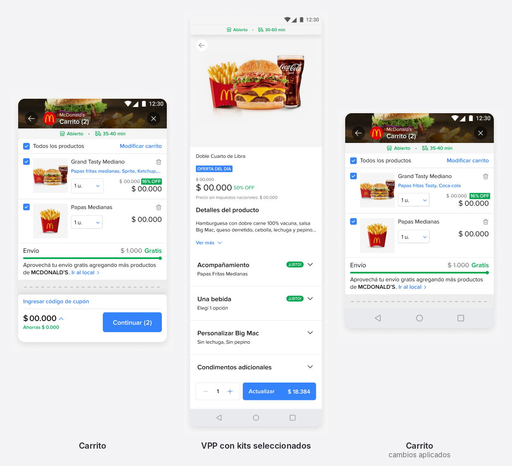
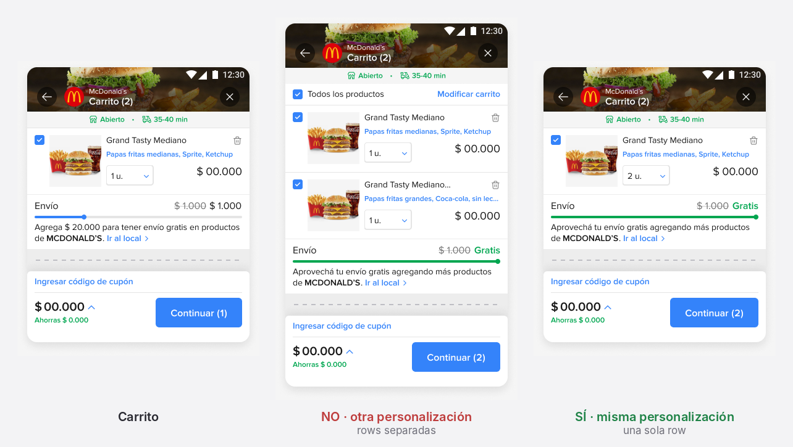
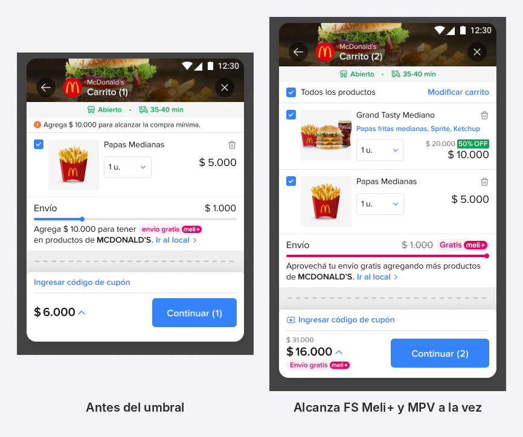
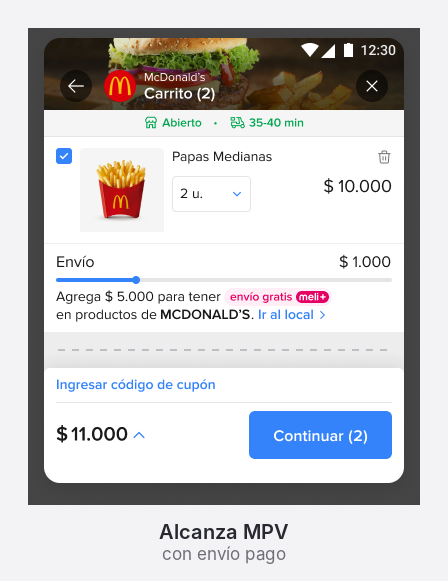
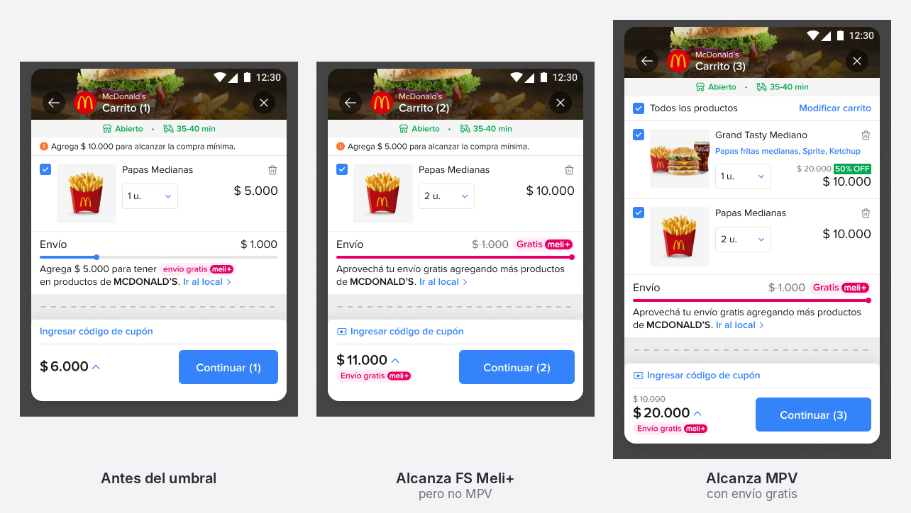

Product design case study · Mercado Libre · 2026
Food cart migration
Mercado Libre’s Food cart was moving onto the marketplace cart. I mapped every behavior a cart has to support, decided case by case what to reuse, keep or create, and wrote it up as 17 use cases and one rule for combining free shipping with a minimum purchase.
Reduced version of a handoff file. Prices in the screens are placeholders.
- Goal
- Move Food onto the marketplace cart without losing what Food needs
- Scope
- 17 use cases and one combined rule
- Platform
- Mobile app
- Market
- Argentina, in Spanish
- My role
- Product design: use cases, flows and rules for handoff
- Tools
- Figma
Context
Reuse the marketplace cart, keep what is specific to Food
Food had its own cart. Moving it onto the marketplace cart meant deciding, for each behavior, whether the marketplace version already did the job.
Most of a cart is shared behavior: select items, change quantity, remove, show discounts and free shipping. Food has a few behaviors of its own: kits with choices set on the product page, a minimum purchase per store and a service fee in the price box.
The handoff had to be clear about both sides, so engineering knew what to build, what to reuse as it is and what to leave alone.
- Kit
- An item with choices to configure, such as a combo with a side and a drink.
- A2C
- Add to cart.
- Awareness A2C
- The footer that appears after adding an item, with the cart count and the progress toward free shipping.
- VPP
- The product page, where a kit is configured.
- VSP
- The store page.
- MPV
- The minimum purchase a store requires.
- FS
- Free shipping, which starts at a threshold.
- Pricebox
- The block of amounts in the cart: products, shipping, service fee and total.
Approach
Every use case gets one of four labels
I split the cart into 17 use cases and labeled how each one gets solved. The label tells engineering what to build and what to leave alone.
| Label | What it means | Cases |
|---|---|---|
| Current | Food keeps the behavior it has today. | 4 |
| Current + capability | Starts from how Food works today and swaps in a component from the marketplace cart. | 1, 2 and 5 |
| Capability | Uses the marketplace cart behavior, in most cases exactly as it is. | 3, 6 and 8 to 17 |
| Current + new | Keeps today’s behavior and adds one new rule. | 7 |
The full list, with the scenario and the solution for each case, is in the last section.
Decisions
Where Food needed more than a reuse
Every add flow starts from the same three entry points: the Food home, the store page and organic search. From there, four cases needed a real decision.

A kit takes one more step than a simple item
A simple item has nothing to configure, so the A2C button adds it straight to the cart. A kit has choices to make, so it still goes through the product page first. Both paths end on the same footer, the Awareness A2C component already used in Supermarket, with the cart count and the progress toward free shipping.
On the product page the button already carries the total. In the cart, the choices appear in blue under the kit name, so the combo can be checked at a glance.

The minimum purchase borrows the Supermarket pattern
When the items don’t reach the store’s minimum, the cart replaces today’s experience with the Supermarket one. An orange banner at the top says how much is missing: “Agrega $ 6.910 para alcanzar la compra mínima.” With two or more products, the banner moves below the list header.
A modal reinforces it with a single action: add the missing amount at the store.

Editing a kit: back discards, confirm applies
From a kit’s row, the buyer reopens the product page with the choices already loaded. The variants link from the marketplace cart is reused as the entry point. The rule is explicit: going back leaves the cart untouched, and confirming on the product page applies the changes to the cart.
In the example, swapping the side and the drink updates the blue line under the kit name.

The same kit twice: one row or two
Adding the same item again raises one question: is it the same customization? If it is different, the cart keeps two separate rows, as Food does today. If it is the same, the two collapse into one row with the quantity, “2 u.” This is the only new behavior in the whole handoff.

Smaller calls in the same handoff
These cases follow the marketplace cart or today’s Food cart, with a note on how they look in Food.
- Service fee (4)
- Stays as it is: a row in the price box, with a tooltip that explains what the fee covers.
- Quantity (8)
- The marketplace quantity selector opens a modal with options from 1 to 6 units and a “more than 6” option.
- Deselect (9)
- Each row has a checkbox. With nothing selected, the button loses its counter, the total reads $ 0 and a message asks for at least one product to continue.
- Paused items (17)
- If a seller pauses an item or a kit before the purchase, its row turns gray with a sold-out tag and a link to similar items, and it can’t be selected.
The cross case
Two thresholds, one rule
Meli+ free shipping and a store’s minimum purchase are separate thresholds, and either one can be the higher. The handoff shows the three possible setups.
The rule: only the minimum purchase decides whether the buyer can continue. Free shipping only changes what shipping costs.
| Setup | Reaching the minimum | Reaching free shipping |
|---|---|---|
| Free shipping $ 15.000 Minimum $ 15.000 | At $ 15.000, the buyer can continue. | At $ 15.000, shipping is free. |
| Free shipping $ 15.000 Minimum $ 10.000 | At $ 10.000, the buyer can continue and pays for shipping. | At $ 15.000, shipping becomes free. |
| Free shipping $ 10.000 Minimum $ 15.000 | At $ 15.000, the buyer can continue with free shipping. | At $ 10.000, shipping is free, but the buyer still can’t continue. |



Reference
The 17 use cases at a glance
Names are the ones used in the handoff, in Spanish, with a short gloss.
| # | Use case | Scenario | Label | Solution |
|---|---|---|---|---|
| 1 | Agregar ítem simpleAdd a simple item | Add an item with no customization straight from the A2C button. | Current + capability | Awareness A2C component, the same one used in Supermarket. |
| 2 | Agregar ítem kitAdd a kit | Add an item with customization. It goes through the product page first. | Current + capability | Awareness A2C component. |
| 3 | Compra mínimaMinimum purchase | The items in the cart don’t reach the store’s minimum. | Capability | Replace today’s experience with the Supermarket one. |
| 4 | Service fee | See the service fee in the cart. | Current | A row in the price box, with a tooltip. |
| 5 | Modificar kitsModify kits | Open the product page to change an item’s customization. | Current + capability | Variants link from the marketplace cart. The product page opens with the kits preloaded. |
| 6 | Abrir VPPOpen the product page | Open a fresh product page, with no kits selected, for the same item. | Capability | Same as the marketplace cart. |
| 7 | Agregar 2 veces el mismo ítemAdd the same item twice | Add a kit with the same or a different customization. | Current + new | Different: separate rows, as today. The same: one row (new). |
| 8 | Cambio de cantidadChange quantity | Increase or decrease an item’s quantity. | Capability | Quantity selector from the marketplace cart. |
| 9 | Deseleccionar productosDeselect products | Uncheck one item or all of them. | Capability | Same as the marketplace cart. |
| 10 | Eliminar productosRemove products | Remove items from the cart. | Capability | Same as the marketplace cart. |
| 11 | Empty | A cart with no products. | Capability | Same as the marketplace cart. |
| 12 | Envío gratis SellerSeller-paid free shipping | Show free shipping paid by the seller. | Capability | Same as the marketplace cart. |
| 13 | Envío gratis Meli+Meli+ free shipping | Show free shipping that comes with the subscription. | Capability | Same as the marketplace cart. |
| 14 | Descuento en productosDiscounted items | Items with a discount in the cart. | Capability | Same as the marketplace cart. |
| 15 | Edición masivaBulk edit | The experience behind the “Modify cart” button. | Capability | Same as the marketplace cart. |
| 16 | Edición en rowRow edit | Edit actions that appear when swiping a row. | Capability | Same as the marketplace cart. |
| 17 | Ítems o kits pausadosPaused items or kits | Products paused by the seller. | Capability | Same as the marketplace cart. |
Takeaways
What this case shows about how I work
Label first, then design
Sorting the 17 cases into current, capability and new made the scope visible. Ten of them needed no design of their own, so the effort could go where Food really differs.
Name the one new thing
Of the 17 cases, only one adds a behavior: identical kits share a row. Calling it out keeps it from getting lost among the reused ones.
State the rule, then show the cases
Free shipping and minimum purchase looked like three different flows. One sentence covers all three: the minimum decides whether the buyer can continue, and free shipping only changes the price of shipping.